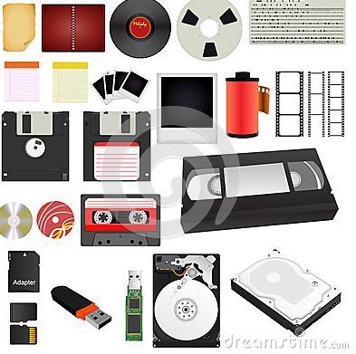
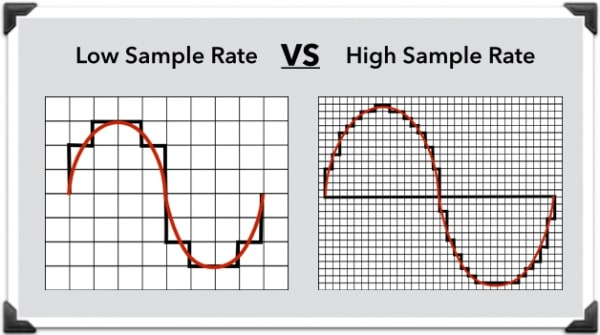
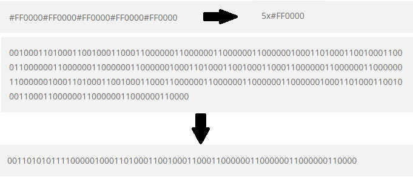

Er zijn verschillende opslagruimtes mogelijk voor beeld en geluid. Hier de meest bekende vormen:
Zo heb je Analoge opslag. Hier kun je beeld en geluid opslaan op fysieke media. Denk aan videobanden en audiocassettes.
Een andere vorm is digitale opslag. Hier sla je beeld en geluid op in bijvoorbeeld MP3 of MP4 vorm.
Streaming doen we tegenwoordig erg vaak. Denk aan de gegevens op YouTube, Spotify etc. Dan wordt het niet opgeslagen op het apparaat, maar op de server.
Als laatste hebben we de cloud. Dan sla je de gegevens ook niet op op het apparaat, maar gaat het via het internet van de ene server naar de andere.
Om digitale afbeeldingen op te slaan en weer te geven heb je vector- en bitmap -afbeeldingen.
Het verschil tussen deze twee is dat je bitmaps vooral terugziet in digitale foto’s, vectorafbeeldingen zie je in logo’s bijvoorbeeld. Het belangrijkste verschil is dat bitmap bestaat uit pixels, als je dan inzoomt op de afbeelding, zie je een blokkenpatroon. Vectors zijn opgebouwd uit punten. Als je dan inzoomt op de afbeelding, zie je geen ‘slechtere’ kwaliteit.

Sample-rate is een van de belangrijkste factoren om vast te leggen hoe gedetailleerd het geluid klinkt. Hij bepaalt het frequentiebereik van het geluid. Het is eigenlijk een geluids versie van pixels in een foto. Hoe meer pixels, hoe scherper de foto, en hoe meer samples, hoe helderder het geluid. Want het digitale geluid wordt opgedeeld in kleine stukjes, die dus samples worden genoemd. Zo heeft een cd een standaard sample rate van 44,1 kHz. Dus het geluid bestaat per seconde uit 44.100 samples.
Compressie wordt gebruikt om de omvang van bijvoorbeeld een tekst, afbeelding of audio en video kleiner te maken om opslagruimte te besparen of gegevensoverdracht eenvoudiger te maken. Dit doe je door het aantal bits in een bestand te verminderen.
Er bestaan twee soorten compressie:
Exact omkeerbaar ( dit is zonder kwaliteitsverlies en wordt loseless genoemd).
Niet-exact omkeerbaar (dit is met kwaliteitsverlies en wordt lossy genoemd).
Je doet dit door herhalende reeksen slechts één keer te schrijven, maar wel bij te houden hoe ze teruggeplaatst moeten worden. Dan wordt je reeks cijfers korter dan voorheen. Zie het voorbeeld hieronder.
